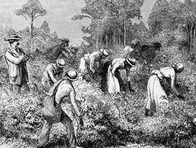
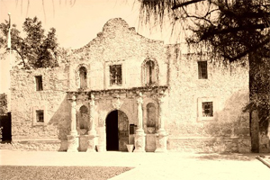
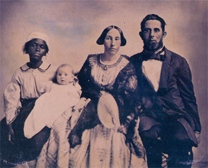
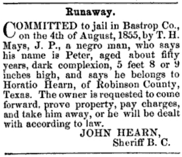

|
Slavery had a relatively brief history in Texas. The institution lasted fewer
than fifty years in the Lone Star State, whereas in some areas of the Old South
it existed for more than two centuries. Texas had just a small fraction of the
total slave population of the United States (less than 5 percent in 1860), and
slavery spread over only the eastern two-fifths of the state before 1865.
Emancipation ended the institution far short of full maturity in Texas.
The limited historical experience of Texas with slavery must be recognized,
but at the same time, this fact should not obscure the vital role of black
bondage during the antebellum years. Texas was settled primarily by Southerners,
many of whom brought with them bondsmen and all aspects of slaveholding culture
as it existed in their home states. By the 1850s black slaves constituted a
sizable minority, approximately 30 percent, of the Lone Star State's population.
Moreover, Texas was slavery's last frontier. The state's rich soil held much of
the future of the peculiar institution, and Texans knew it. James S. Mayfield of
Fayette County undoubtedly spoke for many when he said, during the
constitutional convention of 1845, slavery "is the most important institution of
our land."
|

Slaves work a Texas plantation.
|
There were virtually no black bondsmen in Spanish Texas, so slavery as an
institution of significance in the area arrived with settlers from the United
States. Anglo-Americans, some of whom owned slaves, settled along the upper Red
River and in the San Augustine-Nacogdoches area between 1815 and 1820, but
slavery as an officially recognized institution in Texas began first at Austin's
colony in 1821. The original grant given Moses Austin by Spanish authorities
made no mention of slaves, but when Stephen F. Austin was recognized as heir to
his father's impresario contract later in 1821, it was agreed that settlers
could receive eighty acres of land for each bondsman brought to Texas. Enough of
Austin's original 300 families brought slaves with them that a census of his
colony in 1825 showed 443 slaves in a total population of 1,800.
Texas began to receive Anglo-American settlers just as Mexico gained full
independence from Spain, and it remained a part of the new Mexican nation until
1836. During that period, both the national government in Mexico City and the
state government of Coahuila y Texas based in Saltillo often threatened to
restrict or destroy the institution of slavery. Their efforts resulted in a
tangle of constitutional provisions and decrees, two of which will serve as
examples. First, the Mexican Constitutional Convention of 1824 issued a decree
on July 13 of that year outlawing the foreign and domestic slave trade. American
settlers took this to mean that the importation of slaves as merchandise was
illegal but that bondsmen could still come in with migrating owners. The intent
of the Mexican Convention is not clear, but the American interpretation stood. A
second example of this attitude of Mexican authorities came in 1827-1828. The
constitution of the state of Coahuila y Texas outlawed any further importation
of slaves and decreed that all children born into servitude thereafter would be
freed at birth. Americans in Texas protested, however, and the state government
soon agreed that slaves could be bound by labor contracts and brought in as
indentured servants. Before migrating to Texas, masters signed contracts with
their slaves promising freedom upon entering Mexican territory. The slaves in
turn agreed that they owed their masters compensation for the property loss of
emancipation plus the costs of moving to Texas and annual maintenance costs once
there. They promised to work for their masters until this obligation was met.
The debt, of course, could never be paid in full, and slaves who came in under
such labor contracts remained firmly in servitude. Their children, even those
born in Texas, were bound by the same system.
Thus political authorities in Mexico from 1821 to 1836 were hostile to
slavery but did not adopt any consistent or effective policy to prevent or
destroy the institution in Texas. Even then, their negative stance worried
slaveholders and possibly retarded the immigration of planters from the Old
South. It was estimated in 1836 that Texas had a population, excluding Indians,
of 38,470, approximately 5,000 of whom were slaves. This amounted to 13 percent
of the total, probably a smaller proportion than slaves would have been under
more favorable circumstances.
The Texas Revolution opened the way for rapid expansion on slavery's
frontier. This is not to say that securing slavery was a major cause of the
revolution against Mexico. There is little direct evidence that slavery had more
than peripheral involvement in the general cultural conflict and specific
political grievances that led the Americans to revolt. Nevertheless, as they
fought for independence, Texans were careful to preserve and protect the
peculiar institution. The constitution of 1836 provided that slaves would remain
the property of their owners, that congress could not prohibit the immigration
of slaveholders bringing their property, that slaves could be imported from the
United States (although not from Africa), and that no free blacks could enter
the republic without the approval of congress.
|

The leaders of the Texas Revolution were all slaveowners.
The only adult male survivor of the Battle of the Alamo was a slave
owned by garrison commander William Travis.
|
Given these protections, slavery expanded rapidly during the period of the
republic. By the end of 1845, when Texas approved annexation by the United
States, its population included at least 30,000 bondsmen. Statehood then further
secured the position of slavery in Texas. The constitution of 1845 continued the
protections offered under the republic, and British influence in favor of
emancipation, a threat during the early 1840s, was removed. Under these
circumstances, the growth of slavery was spectacular for the remainder of the
antebellum period. The U.S. census of 1850 reported 58,161 slaves, 27.4 percent
of the 212,592 people in Texas, and the census of 1860 enumerated 182,566
bondsmen, 30.2 percent of the total population. The number of slaves thus rose
213 percent during the last antebellum decade. Texas was the fastest growing
slave state in the Union on the eve of the Civil War.
Texas received thousands of new slaves every year during the 1840s and 1850s.
The majority migrated with their owners to the Lone Star State. Sizable numbers,
however, came through the domestic slave trade. They were bought in the older
states and sold to new masters in Texas. New Orleans was the center of the Deep
South slave trade, but there were dealers in Shreveport, Galveston, and Houston
too who always had bondsmen for sale. Finally, a small proportion of Texas's
slaves, perhaps as many as 2,000 between 1835 and 1865, came through the illegal
African trade.
Slave prices inflated rapidly as the institution flourished in Texas. Data
are scarce on the early years, but it appears that slaves, regardless of age,
sex, or condition, cost on the average approximately $400 in Austin's colony.
Prices remained in that range until the 1840s and then inflated rapidly. The
average price rose from approximately $400 in 1850 to roughly $800 in 1860. On
the eve of the Civil War, prime male field hands aged eighteen to thirty cost on
the average $1,200, and skilled slaves such as blacksmiths often were valued at
$1,800 to $2,000. In comparison, good cotton land could be bought for as little
as $6 an acre. Antebellum Texas was certainly land rich and labor poor.
Slavery grew most importantly along the rivers that offered the richest soil
and relatively inexpensive transportation. The greatest concentration of large
plantations was along the lower Brazos and Colorado rivers near the state's
central Gulf Coast. Texas's largest planters, such as the brothers Robert and D.
G. Mills who owned 344 slaves in 1860, had plantations in this area, and the
population was as heavily slave as that of the Old South's famed Black Belt. The
combined population of Brazoria, Matagorda, Fort Bend, and Wharton counties, for
example, was 70 percent slave in 1860. Northeastern Texas counties with
reasonably good access to the Red River also had numerous slaves. Harrison
County, situated on the Louisiana border west of Shreveport, had more bondsmen
in absolute numbers than any other county in the state in 1850 (6,213) and 1860
(8,784). North-central Texas, the area centering on Dallas, had fewer slaves
than any other settled part of the state in 1860, but it contained much good
cotton land and would have expanded rapidly once adequate transportation was
provided. Slavery's frontier seemed to have vast potential in 1860; some Texans
believed that their state would eventually employ two to four million bondsmen.
Black slavery came to Texas as a preeminently economic institution, a system
of unfree labor used to produce cash crops for profit. Cotton and sugar
plantations would not have been possible without it, and the evidence is strong,
although not everyone will agree, that slavery in Texas generally was profitable
as an individual business investment. The rate of return from cotton production
and the natural increase of the slaves in 1850 and 1860 was consistently 6
percent or higher and ranged up to 12 percent for large planters on the eve of
the Civil War. Slavery as an individual business in antebellum Texas thus showed
no sign of falling under its own economic weight. But its impact on the state's
broad economic development is more uncertain. Certainly the institution promoted
expansion of Texas's agricultural economy, providing most of the labor for a 600
percent increase in cotton production during the 1850s. On the other hand, it
may have contributed to the fact that the Lone Star State, like the rest of the
South,' lagged behind the northern United States in commercialization and
industrialization. Planters, as the individuals who had the capital necessary to
diversify the economy, appear to have been generally satisfied with their
position as agriculturalists. Most saw no compelling reason to risk money on
commercial or industrial ventures. Moreover, approximately 30 percent of Texas's
population, the slaves, were not free consumers, and markets were limited
accordingly. Economic modernization lagged in Texas for many reasons, including
the state's comparative advantage in agriculture, but slavery was certainly part
of the cause.
|

A Texas planter and his family, including
the family's slave.
|
Slavery was also a vital social institution in antebellum Texas. Only one in
every four families owned slaves, but these slaveholders, especially the
planters who held twenty or more bondsmen, constituted the state's wealthiest
and most influential class. They stood at the top of the social ladder that most
other Texans hoped to climb. Even among the Texas Germans whose antislavery
sentiments were emphasized by Frederick Law Olmsted and others, many appear to
have been non-slaveholders primarily due to economic circumstances rather than
conviction. Slavery reflected basic racial views in Texas too. Most whites
believed that blacks were inferior and wanted to be sure that they remained at
the bottom of the social ladder. Slavery guaranteed this.
It has frequently been claimed that slavery in Texas was somehow "better" or
"easier" than bondage elsewhere in the Old South. The merits of such an argument
could be disputed endlessly, but there appear to have been no basic differences
between the legal status, work requirements, disciplinary standards, and
material conditions of Texas slaves and those elsewhere in the South. Bondsmen
in the Lone Star State had the legal status of personal property, movable
chattels that could be bought and sold, mortgaged, hired out, and bequeathed as
an inheritance. They had no legally prescribed way out of slavery, no property
rights, and no rights of marriage and the family. Slaves in Texas had every
imaginable occupation. There were craftsmen, house servants, and herdsmen, for
example, but the majority worked as field hands five days a week and half a day
on Saturday. Bondsmen were subject to disciplinary action by their masters,
protected only by constitutional provisions that they be treated "with humanity"
and that punishment not extend to the taking of life or limb. Whipping was the
most common form of punishment. Use of the lash obviously varied from owner to
owner, and it is not possible to determine the proportion of Texas slaves who
escaped whippings. It is clear, however, that every slave lived daily with the
knowledge that he could be whipped at his master's discretion.
The material conditions of slave life in Texas could best be described as
"adequate." Bondsmen had enough food, shelter, clothing, and medical care to
work effectively, rear families, and have their own social and cultural life.
There was, however, little comfort and no luxury. Texas slaves ate primarily
corn and pork, foods heavy in calories and limited nutritionally. But most also
had sweet potatoes and garden vegetables to supplement their basic diets, and
many had wild game and fish as well. Some suffered from too limited or unvaried
a food supply, but apparently this was not common. Slave families typically
lived in log cabins with dirt floors and little or no furniture except beds
attached to the walls. Clothing was generally made of cheap, coarse materials;
shoes were notoriously rough and ill-fitting. Slaves seem to have found their
clothing more objectionable than their food or housing. Health care, due
primarily to limited medical knowledge, was seriously lacking for everyone in
antebellum Texas, white as well as black. Masters generally tried to protect
their slaves' health; after all, bondsmen were valuable property. But most
slaves had a harder daily life than whites and accordingly suffered more from
diseases and injuries.
In spite of constant labor and material conditions that were generally
adequate at best, slaves in Texas maintained a social life and culture of their
own. They were able to do this in part because of the unequal distribution of
bondsmen among the Lone Star State's slaveholders. In both 1850 and 1860, a
majority of slaves (71 percent in 1860) belonged to holders of ten or more
bondsmen. By 1860, nearly half were owned by planters who held twenty or more.
This meant that the "typical" slave lived with a relatively large number of his
fellow bondsmen. Therefore, they could form family units, educate their children
about the slave system, worship together, have their own songs and celebrations,
and in general develop the beliefs and practices of a slave culture.
Families appear to have been the central institution in transmitting this
culture. Many Texas slaves had their families disrupted when they moved from
older Southern states, and all the threats to family stability such as sales and
estate settlements remained even after they settled in new homes. Nevertheless,
most bondsmen in Texas lived with at least some members of their immediate
families. Together they shaped and shared a culture that helped give them the
strength to endure.
Slaves in Texas exhibited a broad range of behavioral adjustments to the
peculiar institution. Some were willing to resist directly by running away or
plotting violent rebellion. The state's proximity to Mexico apparently offered
special inducements to runaways. Thousands succeeded in crossing the Rio Grande
where they were given a reasonably hospitable reception by the Mexicans. Texas
slaveholders complained bitterly and pressed the U.S. government during the
1850s to negotiate an extradition treaty with Mexico. They also threatened to
take matters into their own hands along the border and had the state legislature
pass laws offering special incentives for the capture of runaways. Regardless,
however, of this concern and the loss of thousands of slaves, runaways to Mexico
were not numerous enough to pose a serious threat to slavery in Texas at the
close of the antebellum period.
|

An ad for a runaway Texas slave
|
Texas had no major slave rebellions. Perhaps the most significant attempt was
a plot involving several hundred Colorado County slaves in 1856. According to
the bondsmen who gave away the proposed insurrection, they hoped to fight their
way to freedom in Mexico. Three slaves were hanged, and two hundred were
whipped. During the summer of 1860, northern and eastern Texas were swept by a
series of fires and water source poisonings which supposedly resulted from an
abolitionist plot. Vigilantism took over, and a number of whites and blacks were
hanged. It is by no means clear that a plot ever existed; if it did, it was far
short of a slave uprising.
Runaways and rebels were thus a minority among Texas slaves. The same was
true of the loyal servants, those slaves who formed emotional ties of trust with
kindly or paternalistic masters and were faithful bondsmen. Most, it seems, took
a clear-eyed view of the institution. They recognized the injustice of their
position as human property and knew that kind treatment did nothing to change
the institution's basics. Josephine Howard, a slave in Harrison County, stated
this view succinctly when she noted that her master was not any "worser den
other white folks." At the same time, most bondsmen recognized all the controls
such as slave patrols that existed to preserve the system and saw the heavy
price runaways and rebels paid when they failed. Their reaction was to offer
only nonviolent resistance and seek to survive on the best terms possible. The
majority were not revolutionaries determined to destroy slavery, but they did
not surrender totally to their situation either. Most Texas slaves dreamed of
freedom and adjusted their behavior in ways that allowed them to endure until
deliverance came.
Slaveholders dominated antebellum Texas. They held a disproportionately large
share of all forms of wealth, and although a numerical minority, they controlled
a majority of important public offices at the local and state level. The
benefits of ownership were obvious, but slavery was a troublesome institution in
many ways too. Constant tension was inherent in the management of human
property. And the drumfire of moral criticism from outside the South was also
unsettling. Texas's slaveholders always stood ready to defend slavery, but they
paid a price, albeit a smaller one than the bondsmen, for the institution.
The Civil War did not disrupt slavery in Texas because Union forces did not
invade any major slaveholding area. The occupation of Galveston in 1862-1863
drove many slaveholders from that city, and bondsmen were used in preparing
coastal fortifications. Generally, however, slaves in the Texas interior
continued to live and work as they had during the 1850s. In fact, the population
increased notably, even doubling in some interior counties by 1864, as owners in
other states "refugeed" their property away from battle areas to the more secure
Southwest. A great many Texas slaves did come to understand during the war that
they would be free if the South lost. They listened eagerly for war news, passed
it around among themselves, and in some cases even discussed what they would do
when freedom came.
Slavery formally ended in Texas on June 19, 1865 ("Juneteenth," as it became
known among blacks) when General Gordon Granger arrived at Galveston with
occupying Union forces and announced emancipation. It took time for this news to
spread across the state, but slavery ended everywhere that summer. The
emancipated slaves joyfully celebrated their dream of deliverance come true and
then set about discovering what emancipation meant. Unfortunately, few Texans,
black or white, were prepared for freedom.
Source: Randall M. Miller and John David Smith, eds. Dictionary of
Afro-American Slavery (Westport, CT: Praeger, 1997), 724-30.
|